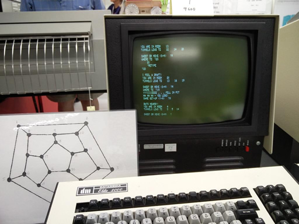
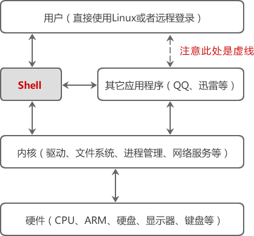

首页 > Shell > Shell基础（开胃菜）
Shell是什么？1分钟理解Shell的概念！
现在我们使用的操作系统（Windows、Mac OS、Android、iOS 等）都是带图形界面的，简单直观，容易上手，对专业用户（程序员、网管等）和普通用户（家庭主妇、老年人等）都非常适用；计算机的普及离不开图形界面。
然而在计算机的早期并没有图形界面，我们只能通过一个一个地命令来控制计算机，这些命令有成百上千之多，且不说记住这些命令非常困难，每天面对没有任何色彩的“黑屏”本身就是一件枯燥的事情；这个时候的计算机还远远谈不上炫酷和普及，只有专业人员才能使用。
然而，真正能够控制计算机硬件（CPU、内存、显示器等）的只有操作系统内核（Kernel），图形界面和命令行只是架设在用户和内核之间的一座桥梁。
用户界面和命令行就是这个另外开发的程序，就是这层“代理”。在Linux下，这个命令行程序叫做 Shell。
Shell 是一个应用程序，它连接了用户和 Linux 内核，让用户能够更加高效、安全、低成本地使用 Linux 内核，这就是 Shell 的本质。
Shell 本身并不是内核的一部分，它只是站在内核的基础上编写的一个应用程序，它和 QQ、迅雷、Firefox 等其它软件没有什么区别。然而 Shell 也有着它的特殊性，就是开机立马启动，并呈现在用户面前；用户通过 Shell 来使用 Linux，不启动 Shell 的话，用户就没办法使用 Linux。
其实，Shell 程序本身的功能是很弱的，比如文件操作、输入输出、进程管理等都得依赖内核。我们运行一个命令，大部分情况下 Shell 都会去调用内核暴露出来的接口，这就是在使用内核，只是这个过程被 Shell 隐藏了起来，它自己在背后默默进行，我们看不到而已。
接口其实就是一个一个的函数，使用内核就是调用这些函数。这就是使用内核的全部内容了吗？嗯，是的！除了函数，你没有别的途径使用内核。
比如，我们都知道在 Shell 中输入
Shell 本身支持的命令并不多，功能也有限，但是 Shell 可以调用其他的程序，每个程序就是一个命令，这使得 Shell 命令的数量可以无限扩展，其结果就是 Shell 的功能非常强大，完全能够胜任 Linux 的日常管理工作，如文本或字符串检索、文件的查找或创建、大规模软件的自动部署、更改系统设置、监控服务器性能、发送报警邮件、抓取网页内容、压缩文件等。
更加惊讶的是，Shell 还可以让多个外部程序发生连接，在它们之间很方便地传递数据，也就是把一个程序的输出结果传递给另一个程序作为输入。
大家所说的 Shell 强大，并不是 Shell 本身功能丰富，而是它擅长使用和组织其他的程序。Shell 就是一个领导者，这正是 Shell 的魅力所在。
可以将 Shell 在整个 Linux 系统中的地位描述成下图所示的样子。注意“用户”和“其它应用程序”是通过虚线连接的，因为用户启动 Linux 后直接面对的是 Shell，通过 Shell 才能运行其它的应用程序。
Shell 虽然没有 C++、Java、Python 等强大，但也支持了基本的编程元素，例如：
站在这个角度讲，Shell 也是一种编程语言，它的编译器（解释器）是 Shell 这个程序。我们平时所说的 Shell，有时候是指连接用户和内核的这个程序，有时候又是指 Shell 编程。
Shell 主要用来开发一些实用的、自动化的小工具，而不是用来开发具有复杂业务逻辑的中大型软件，例如检测计算机的硬件参数、搭建 Web 运行环境、日志分析等，Shell 都非常合适。
使用 Shell 的熟练程度反映了用户对 Linux 的掌握程度，运维工程师、网络管理员、程序员都应该学习 Shell。
尤其是 Linux 运维工程师，Shell 更是必不可少的，是必须掌握的技能，它使得我们能够自动化地管理服务器集群，否则你就得一个一个地登录所有的服务器，对每一台服务器都进行相同的设置，而这些服务器可能有成百上千之多，会浪费大量的时间在重复性的工作上。
有的编程语言，如 C/C++、Pascal、Go语言、汇编等，必须在程序运行之前将所有代码都翻译成二进制形式，也就是生成可执行文件，用户拿到的是最终生成的可执行文件，看不到源码。
这个过程叫做编译（Compile），这样的编程语言叫做编译型语言，完成编译过程的软件叫做编译器（Compiler）。
而有的编程语言，如 Shell、JavaScript、Python、PHP等，需要一边执行一边翻译，不会生成任何可执行文件，用户必须拿到源码才能运行程序。程序运行后会即时翻译，翻译完一部分执行一部分，不用等到所有代码都翻译完。
这个过程叫做解释，这样的编程语言叫做解释型语言或者脚本语言（Script），完成解释过程的软件叫做解释器。
编译型语言的优点是执行速度快、对硬件要求低、保密性好，适合开发操作系统、大型应用程序、数据库等。
脚本语言的优点是使用灵活、部署容易、跨平台性好，非常适合 Web 开发以及小工具的制作。
Shell 就是一种脚本语言，我们编写完源码后不用编译，直接运行源码即可。
然而在计算机的早期并没有图形界面，我们只能通过一个一个地命令来控制计算机，这些命令有成百上千之多，且不说记住这些命令非常困难，每天面对没有任何色彩的“黑屏”本身就是一件枯燥的事情；这个时候的计算机还远远谈不上炫酷和普及，只有专业人员才能使用。

图：早期的电脑，都是“黑纸白字”
图：早期的电脑，都是“黑纸白字”
猛击《带你逛西雅图活电脑博物馆》可以欣赏更多早期的计算机。对于图形界面，用户点击某个图标就能启动某个程序；对于命令行，用户输入某个程序的名字（可以看做一个命令）就能启动某个程序。这两者的基本过程都是类似的，都需要查找程序在硬盘上的安装位置，然后将它们加载到内存运行。
关于程序的运行原理，请猛击《载入内存，让程序运行起来》。换句话说，图形界面和命令行要达到的目的是一样的，都是让用户控制计算机。
然而，真正能够控制计算机硬件（CPU、内存、显示器等）的只有操作系统内核（Kernel），图形界面和命令行只是架设在用户和内核之间的一座桥梁。
如果你不了解操作系统的作用，请转到《操作系统是什么》。由于安全、复杂、繁琐等原因，用户不能直接接触内核（也没有必要），需要另外再开发一个程序，让用户直接使用这个程序；该程序的作用就是接收用户的操作（点击图标、输入命令），并进行简单的处理，然后再传递给内核，这样用户就能间接地使用操作系统内核了。你看，在用户和内核之间增加一层“代理”，既能简化用户的操作，又能保障内核的安全，何乐不为呢？
用户界面和命令行就是这个另外开发的程序，就是这层“代理”。在Linux下，这个命令行程序叫做 Shell。
Shell 是一个应用程序，它连接了用户和 Linux 内核，让用户能够更加高效、安全、低成本地使用 Linux 内核，这就是 Shell 的本质。
Shell 本身并不是内核的一部分，它只是站在内核的基础上编写的一个应用程序，它和 QQ、迅雷、Firefox 等其它软件没有什么区别。然而 Shell 也有着它的特殊性，就是开机立马启动，并呈现在用户面前；用户通过 Shell 来使用 Linux，不启动 Shell 的话，用户就没办法使用 Linux。
Shell 是如何连接用户和内核的？
Shell 能够接收用户输入的命令，并对命令进行处理，处理完毕后再将结果反馈给用户，比如输出到显示器、写入到文件等，这就是大部分读者对 Shell 的认知。你看，我一直都在使用 Shell，哪有使用内核哦？我也没有看到 Shell 将我和内核连接起来呀？！其实，Shell 程序本身的功能是很弱的，比如文件操作、输入输出、进程管理等都得依赖内核。我们运行一个命令，大部分情况下 Shell 都会去调用内核暴露出来的接口，这就是在使用内核，只是这个过程被 Shell 隐藏了起来，它自己在背后默默进行，我们看不到而已。
接口其实就是一个一个的函数，使用内核就是调用这些函数。这就是使用内核的全部内容了吗？嗯，是的！除了函数，你没有别的途径使用内核。
比如，我们都知道在 Shell 中输入
cat log.txt命令就可以查看 log.txt 文件中的内容，然而，log.txt 放在磁盘的哪个位置？分成了几个数据块？在哪里开始？在哪里终止？如何操作探头读取它？这些底层细节 Shell 统统不知道的，它只能去调用内核提供的 open() 和 read() 函数，告诉内核我要读取 log.txt 文件，请帮助我，然后内核就乖乖地按照 Shell 的吩咐去读取文件了，并将读取到的文件内容交给 Shell，最后再由 Shell 呈现给用户（其实呈现到显示器上还得依赖内核）。整个过程中 Shell 就是一个“中间商”，它在用户和内核之间“倒卖”数据，只是用户不知道罢了。
Shell 还能连接其它程序
在 Shell 中输入的命令，有一部分是 Shell 本身自带的，这叫做内置命令；有一部分是其它的应用程序（一个程序就是一个命令），这叫做外部命令。Shell 本身支持的命令并不多，功能也有限，但是 Shell 可以调用其他的程序，每个程序就是一个命令，这使得 Shell 命令的数量可以无限扩展，其结果就是 Shell 的功能非常强大，完全能够胜任 Linux 的日常管理工作，如文本或字符串检索、文件的查找或创建、大规模软件的自动部署、更改系统设置、监控服务器性能、发送报警邮件、抓取网页内容、压缩文件等。
更加惊讶的是，Shell 还可以让多个外部程序发生连接，在它们之间很方便地传递数据，也就是把一个程序的输出结果传递给另一个程序作为输入。
大家所说的 Shell 强大，并不是 Shell 本身功能丰富，而是它擅长使用和组织其他的程序。Shell 就是一个领导者，这正是 Shell 的魅力所在。
可以将 Shell 在整个 Linux 系统中的地位描述成下图所示的样子。注意“用户”和“其它应用程序”是通过虚线连接的，因为用户启动 Linux 后直接面对的是 Shell，通过 Shell 才能运行其它的应用程序。

Shell 也支持编程
Shell 并不是简单的堆砌命令，我们还可以在 Shell 中编程，这和使用 C++、C#、Java、Python 等常见的编程语言并没有什么两样。Shell 虽然没有 C++、Java、Python 等强大，但也支持了基本的编程元素，例如：
- if...else 选择结构，case...in 开关语句，for、while、until 循环；
- 变量、数组、字符串、注释、加减乘除、逻辑运算等概念；
- 函数，包括用户自定义的函数和内置函数（例如 printf、export、eval 等）。
站在这个角度讲，Shell 也是一种编程语言，它的编译器（解释器）是 Shell 这个程序。我们平时所说的 Shell，有时候是指连接用户和内核的这个程序，有时候又是指 Shell 编程。
Shell 主要用来开发一些实用的、自动化的小工具，而不是用来开发具有复杂业务逻辑的中大型软件，例如检测计算机的硬件参数、搭建 Web 运行环境、日志分析等，Shell 都非常合适。
使用 Shell 的熟练程度反映了用户对 Linux 的掌握程度，运维工程师、网络管理员、程序员都应该学习 Shell。
尤其是 Linux 运维工程师，Shell 更是必不可少的，是必须掌握的技能，它使得我们能够自动化地管理服务器集群，否则你就得一个一个地登录所有的服务器，对每一台服务器都进行相同的设置，而这些服务器可能有成百上千之多，会浪费大量的时间在重复性的工作上。
Shell 是一种脚本语言
任何代码最终都要被“翻译”成二进制的形式才能在计算机中执行。有的编程语言，如 C/C++、Pascal、Go语言、汇编等，必须在程序运行之前将所有代码都翻译成二进制形式，也就是生成可执行文件，用户拿到的是最终生成的可执行文件，看不到源码。
这个过程叫做编译（Compile），这样的编程语言叫做编译型语言，完成编译过程的软件叫做编译器（Compiler）。
而有的编程语言，如 Shell、JavaScript、Python、PHP等，需要一边执行一边翻译，不会生成任何可执行文件，用户必须拿到源码才能运行程序。程序运行后会即时翻译，翻译完一部分执行一部分，不用等到所有代码都翻译完。
这个过程叫做解释，这样的编程语言叫做解释型语言或者脚本语言（Script），完成解释过程的软件叫做解释器。
编译型语言的优点是执行速度快、对硬件要求低、保密性好，适合开发操作系统、大型应用程序、数据库等。
脚本语言的优点是使用灵活、部署容易、跨平台性好，非常适合 Web 开发以及小工具的制作。
Shell 就是一种脚本语言，我们编写完源码后不用编译，直接运行源码即可。
关注公众号「站长严长生」，在手机上阅读所有教程，随时随地都能学习。内含一款搜索神器，免费下载全网书籍和视频。

微信扫码关注公众号